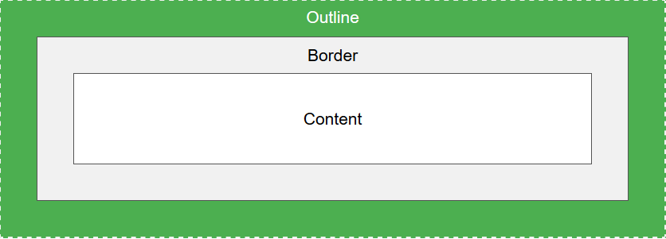

This element has a black border and a green outline with a width of 10px.
An outline is a line that is drawn around elements, OUTSIDE the borders, to make the element "stand out".
CSS has the following outline properties:
Note: Outline differs from borders! Unlike border, the otline is drawn outside the element's border, and may overlap other content. Also, the outline is NOT a part of the element's dimension; the elemet's total width and height is not affected by the eidth of the outline.
The outline-style property specifies the style of the outline, and can have one of the following values:
The following shows the different outline-style values:
A dotted outline.
A dashed outline.
A solid outline.
A double outline
A groove outline. The effect depends on the outline-color value.
A ridge outline. The effect depends on the outline-color value.
An inset outline. The effect depends on the outline-color value.
An outset outline. The effect depends on the outline-color value.
Note: None of the other outline properties will have any effect, unless the outline-style property is set!
The outline-color property is used to set the color of the outline.
The color can be set by:
The following example shows some different outlines with different colors. Also notice that these elements also have a thin black border inside the outline:
A solid red outline.
A double green outline.
An outset yellow outline.
The following example uses outline-color: invert, which performs a color invasion. This ensures that the outline is visible, regardless of color background:
A solid invert outline.
The outline-width property specifies the width of the outline, and can have one og the following values:
The following example shoes some outlines with different widths:
A thin outline.
A medium outline.
A thick outline.
A 4px thick outline.
The outline property is a shorthand property for setting the following individual outline properties:
The following example shows some outlines specified with the shorthand outline property.
A dashed outline.
A dotted red outline.
A 5px solid yellow outline.
A thick ridge pink outline.
The outline-offset property adds space between an outline and the edge/border of an element. The space between an element and its outline is transparent.
The following example specifies an outline 15px outside the border edge:
This paragraph has an outline 15px outside the border edge.
The following example shows that the space between an element and its outline is transparent:
This paragraph has an outline of 15px outside the border edge.
| Property | Description |
|---|---|
| outline | A shorthand property for setting outline-width, outline-style, and outline-color in one declaration. |
| outline-color | Sets the color of an outline |
| outline-offset | Specifies the space between an outline and the edge or border of an element |
| outline-style | Sets the style of an outline |
| outline-width | Sets the width of an outline |